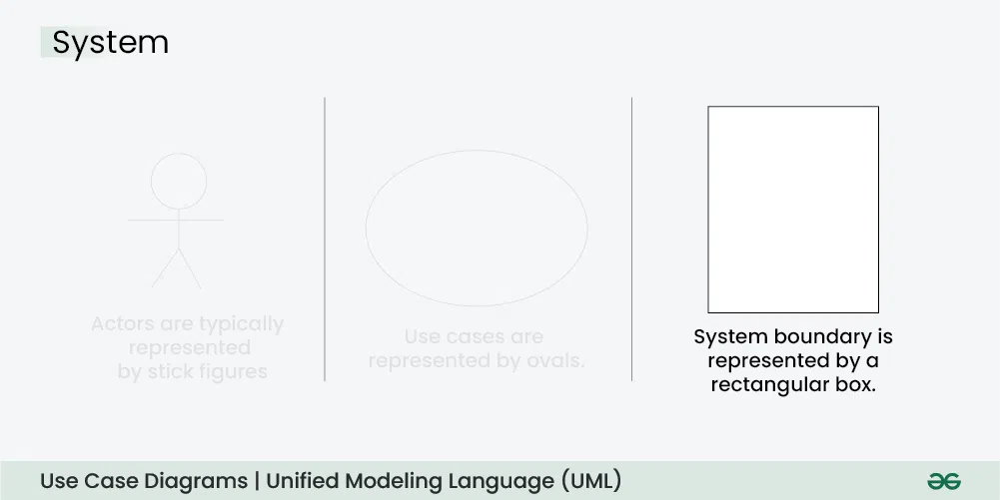
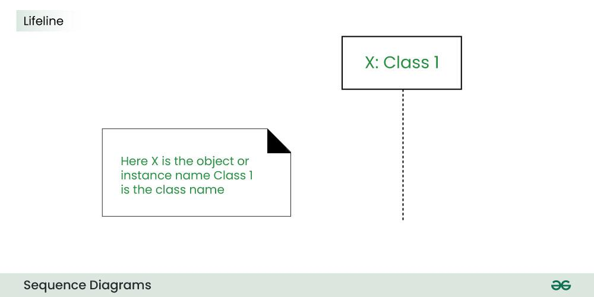
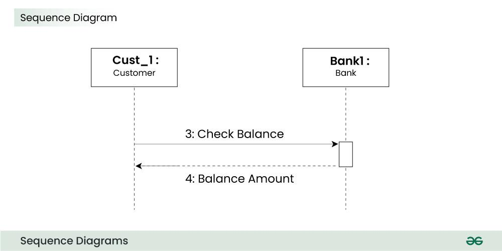

5.16 UML Modelling
The Unified Modeling Language (UML) is a standardised visual language for specifying, visualising, constructing, and documenting software systems. UML is closely linked to object-oriented design and provides diagrams that communicate design decisions to both technical and non-technical stakeholders.
Complex applications require collaboration among multiple teams — UML provides a clear, concise way to communicate requirements, functionality, and processes without going into implementation details.

Why UML is used
- UML provides a standard visual notation understood across the software industry.
- It bridges the gap between abstract requirements and concrete implementation.
- It helps communicate with non-programmers about essential requirements, functionalities, and processes.
- It supports both structural (static) and behavioural (dynamic) views of a system.
UML diagram categories
- Structural diagrams show the static structure — classes, objects, components, and their relationships.
- Behavioural diagrams show dynamic behaviour — how objects interact over time, workflows, and state changes.
1. Use Case Diagram

- Use case diagrams depict the functionality of a system and its interaction with external agents (actors).
- They provide a high-level view of what the system does without implementation details.
- Actor: A user or external system that interacts with the system (stick figure).
- Use case: A service or function the system provides to an actor (oval).
- System boundary: A rectangle enclosing all use cases — defines the scope of the system.
- Association: A line connecting an actor to a use case they interact with.
- Include relationship: Dashed arrow — one use case includes the functionality of another (promotes reuse).
- Extend relationship: Dashed arrow — one use case optionally extends another under certain conditions.

2. Class Diagram

- Class diagrams show the structure of a system by highlighting classes, their attributes, methods, and relationships.
- They are the foundation of object-oriented design — visualising how data and behaviours are organised.
- Class: Represented as a rectangle divided into three compartments — class name, attributes, methods.
- Association: A line connecting two classes that interact — may show multiplicity (1, *, 1..n).
- Inheritance (generalisation): A hollow arrow from subclass to superclass — "is-a" relationship.
- Aggregation: A hollow diamond — "has-a" relationship where parts can exist independently.
- Composition: A filled diamond — "part-of" relationship where parts cannot exist without the whole.
- Multiplicity: Numbers at association ends indicating how many objects participate (e.g., 1, 0..*, 1..5).
3. Sequence Diagram

- Sequence diagrams depict interaction between objects in a sequential order — the order in which messages are exchanged.
- Also called event diagrams or event scenarios.
- Lifeline: A vertical dashed line below each object — represents the object's existence over time.
- Activation bar: A thin rectangle on a lifeline — shows when an object is actively processing.
- Message: A horizontal arrow between lifelines — represents a method call or signal (solid = synchronous, dashed = asynchronous).
- Used for use case analysis, system architecture planning, and documenting dynamic processes.

4. Activity Diagram

- Activity diagrams illustrate the flow of control in a system — workflows and business processes.
- They can also represent the steps involved in executing a use case.
- Activity: Rounded rectangle — an action or step in the workflow.
- Decision node: Diamond — a branch point with multiple outgoing paths (if/else logic).
- Merge node: Diamond — where multiple paths combine back into one.
- Fork/join: Bar — represents parallel (concurrent) activities.
- Initial/final node: Filled circle (start) and circle with inner dot (end).
5. Other UML diagrams (exam awareness)
- State diagram: Shows states of an object and transitions triggered by events — useful for objects with distinct lifecycle states.
- Component diagram: Shows how physical software components are organised and how they depend on each other.
- Deployment diagram: Shows how software components are deployed on hardware nodes.
- Package diagram: Organises model elements into groups/packages for large systems.
UML in the design process
- During high-level design, use case and class diagrams define scope and structure.
- During low-level design, sequence and activity diagrams detail object interactions and workflows.
- UML diagrams become part of the SDD and guide coding in OOP languages.
Exam question — UML modelling
Q: What is UML? Explain use case, class, and sequence diagrams with their key elements.
Model answer points:
- Define UML: standard visual language for software design; linked to OOD.
- Use case: actors, use cases, system boundary, include/extend — shows system functionality.
- Class: classes with attributes/methods, associations, inheritance, multiplicity.
- Sequence: lifelines, messages, activation bars — shows interaction over time.
- Activity: workflow, decisions, parallel paths — shows control flow.